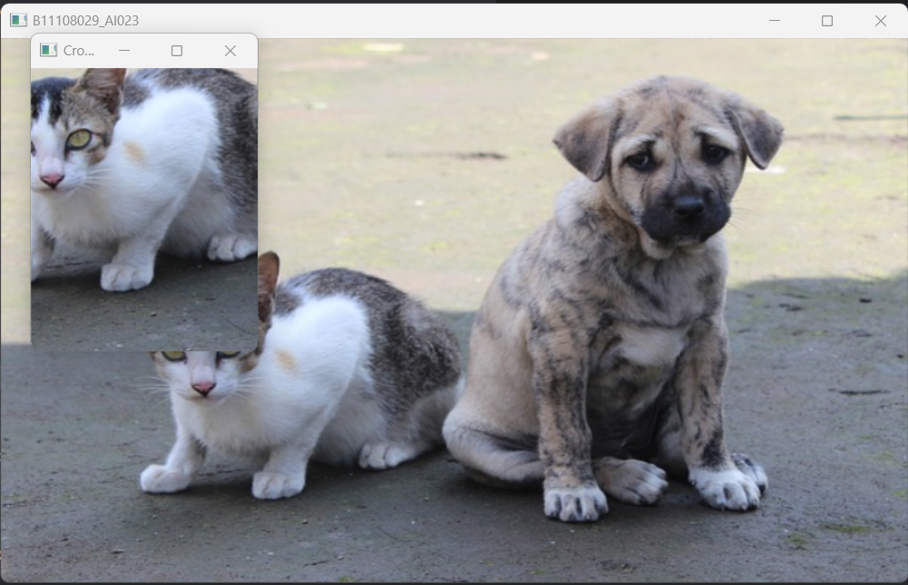

AI023
圖片裁切與畫面區塊比較
從原始圖片裁切特定區域，同時顯示原圖與裁切圖，方便直接比較。
功能簡介
本程式從原始圖片中裁切特定區域，並同時顯示原圖與裁切後圖像，讓使用者能直觀比較。這對於影像處理中區域辨識與裁切座標的理解很有幫助。
成果展示

程式碼片段
AI023｜圖片裁切與畫面區塊比較
import cv2
img = cv2.imread("../pic/cat_and_dog.jpg")
img = cv2.resize(img, (800, 480))
# 裁切區域設定：y從210~460，x從160~360
imgCropped = img[210:460, 160:360]
print("原圖尺寸：", img.shape)
print("裁切後尺寸：", imgCropped.shape)
cv2.imshow("A11408001_AI023", img)
cv2.imshow("裁切區塊", imgCropped)
cv2.waitKey(0)